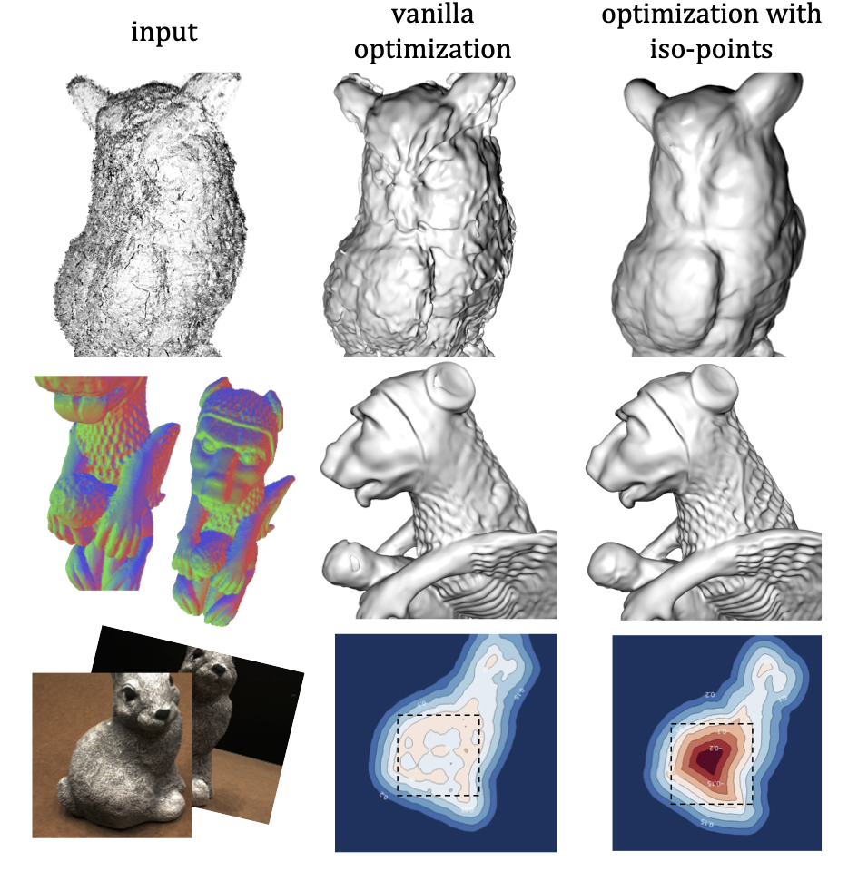
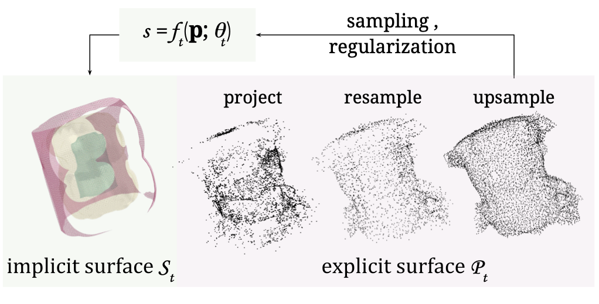

Neural implicit functions have emerged as a powerful representation for surfaces in 3D. Such a function can encode a high quality surface with intricate details into the parameters of a deep neural network. However, optimizing for the parameters for accurate and robust reconstructions remains a challenge, especially when the input data is noisy or incomplete. In this work, we develop a hybrid neural surface representation that allows us to impose geometry-aware sampling and regularization, which significantly improves the fidelity of reconstructions. We propose to use iso-points as an explicit representation for a neural implicit function. These points are computed and updated on-the-fly during training to capture important geometric features and impose geometric constraints on the optimization. We demonstrate that our method can be adopted to improve state-of-the-art techniques for reconstructing neural implicit surfaces from multi-view images or point clouds. Quantitative and qualitative evaluations show that, compared with existing sampling and optimization methods, our approach allows faster convergence, better generalization, and accurate recovery of details and topology.
 We propose a hybrid neural surface representation with implicit functions and iso-points. The representation leads to accurate and robust surface reconstruction from imperfect data. The on-the-fly conversion with efficient iso-points extraction allows us to augment existing optimization pipelines in a variety of ways. In the first row, geometry-aware regularizers are incorporated to reconstruct a surface from a noisy point cloud; in the second row, geometric details are preserved in multi-view reconstruction via feature-aware sampling; in the last row, iso-points serve as a 3D prior to improve the topological accuracy of the reconstructed surface
 We efficiently extract a dense, uniformly distributed set of iso-points as an explicit representation for a neural implicit surface. Since the extraction is fast, iso-points can be integrated back into the optimization as a 3D geometric prior, enhancing the optimization.